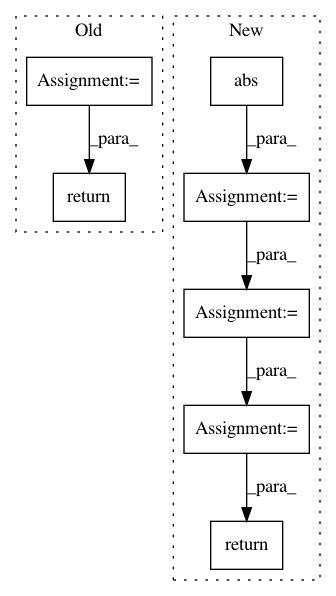

320cbfd379a8e8de6ff49eeba35ca16750e80d38,librosa/core/audio.py,,autocorrelate,#,357
Before Change
result = scipy.signal.fftconvolve(y, y[::-1], mode="full")
result = result[int(len(result)/2):]
if max_size is None:
return result
else:
max_size = int(max_size)
return result[:max_size]
After Change
// Compute the power spectrum along the chosen axis
// Pad out the signal to support full-length auto-correlation.
powspec = np.abs(fft.fft(y, n=2 * y.shape[axis] + 1, axis=axis))**2
// Convert back to time domain
autocorr = fft.ifft(powspec, axis=axis, overwrite_x=True)
// Slice down to max_size
subslice = [Ellipsis] * autocorr.ndim
subslice[axis] = slice(max_size)
return autocorr[subslice]
@cache
def zero_crossings(y, threshold=1e-10, ref_magnitude=None, pad=True,
In pattern: SUPERPATTERN
Frequency: 3
Non-data size: 7
Instances
Project Name: librosa/librosa
Commit Name: 320cbfd379a8e8de6ff49eeba35ca16750e80d38
Time: 2015-08-25
Author: brian.mcfee@nyu.edu
File Name: librosa/core/audio.py
Class Name:
Method Name: autocorrelate
Project Name: librosa/librosa
Commit Name: 2bae518e899657e536572fa59df6e1587795e397
Time: 2014-12-30
Author: brian.mcfee@nyu.edu
File Name: librosa/feature.py
Class Name:
Method Name: line_features
Project Name: quantumlib/Cirq
Commit Name: 451b2f16acd7dcc8a38cddeff9383143184906fc
Time: 2021-02-08
Author: smitsanghavi@users.noreply.github.com
File Name: cirq/circuits/circuit_operation.py
Class Name: CircuitOperation
Method Name: repeat